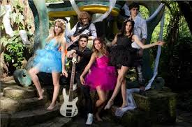

Valentina y su familia
Catalina, Quirino, Eduardo y Valentina
Aparecen tambien Manzanita y la tía Magos pero no las puse xd.
Valentina y sus amigos
Ellos son sus mejores amigos con los cuales comparte muchas aventuras durante dtoda la serie.
Video musical de ellos:
Como se sabe, ellos eran una banda asi que agregue unos de sus videos musicales.